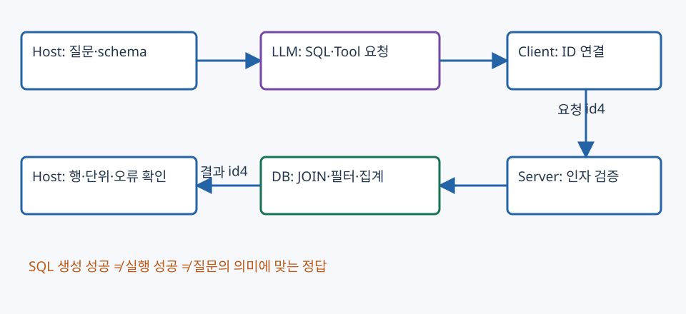

15. Text2SQL과 MCP — 스키마에서 질의·행·답변까지
“AI 제품의 매출 합계는?”은 관련 문서 몇 개를 읽는 문제와 다르다. 조건을 만족하는 모든 행을 올바른 키로 JOIN하고 집계해야 한다. 이 장은 NL2SQL___mcp.pdf 20쪽, text2sql_mcp_lecture.html, 실제 mcp-text2sql/README.md·server.py·sample_db.py를 함께 읽는다. 페이지 안의 실습은 작은 배열의 JOIN·집계와 요청 상태를 계산하는 교육용 데모이며 DB·LLM·MCP 서버를 실행하지 않는다.
1. Text2SQL을 하는 주체
| 주체 | 입력 | 수행·출력 |
|---|---|---|
| Host 애플리케이션 | 사용자 질문·대화·접근 조건 | schema 수집, 모델 호출, 도구 실행 제어, 결과 통합 |
| LLM | 질문·schema·질의 예시·도구 정의 | SQL 또는 구조화된 tool 요청 생성, 결과 행의 자연어 설명 |
| MCP Client | 서버와 협상한 기능·요청 | 서버별 연결·request ID·응답·오류·세션 관리 |
| MCP Server | 허용된 도구 이름과 검증한 인자 | DB 조회·스키마 제공·결과/오류 반환 |
| DB | SQL과 바인딩된 값 | 계획·JOIN·필터·집계 후 결과 행 |
SQL 생성과 SQL 실행은 다른 단계다. 실습 server.py에는 LLM 호출이 없다. host 쪽 모델이 SQL을 만들고 server의 query_db(sql)이 실행한다. PDF 6쪽 그림의 서버 박스에 있는 “Text2SQL Logic”만 보고 생성까지 서버가 수행한다고 읽지 않는다. 그림 아래 설명과 11~13쪽은 생성 시점을 host의 LLM 호출로 명시한다.

그림 읽기: 위의 파란 흐름은 준비·질문·schema, 보라색은 SQL/결과, 녹색은 확인된 성공, 주황색은 오류·보류다. Schema를 읽는 것과 SELECT를 실행하는 것을 나누고, SQL이 구문상 성공해도 질문의 의미에 맞는지 검증한다.
2. PDF의 인터페이스와 실제 코드의 차이
PDF 8~10쪽은 sqlite://schema Resource, run_read_only_sql Tool, text_to_sql_prompt Prompt라는 설명용 구성을 보인다. 반면 로컬 실습 server.py는 아래 **네 함수 모두 @mcp.tool()**로 등록한다. 같은 기능 이름이라고 MCP primitive 종류까지 같지는 않다.
| 실제 Tool | 인자 | 원본 코드의 반환 |
|---|---|---|
list_tables() |
없음 | 내부 sqlite 테이블을 제외한 이름 문자열 |
get_schema() |
없음 | sqlite_master의 CREATE TABLE SQL을 연결한 문자열 |
sample_data(table_name, limit=5) |
허용 table 이름, 행 수 | 최대20을 적용한 표본 행의 Python 표현 문자열 |
query_db(sql) |
SQL 문자열 | SELECT 결과 행의 Python 표현 문자열, “결과가 없습니다”, 또는 오류 문자열 |
str([dict(row),...])는 단일 따옴표 등을 포함할 수 있어 엄격한 JSON 직렬화가 아니다. 실행기에서 이를 JSON으로 처리하려면 명시적 형식 변환 계약이 필요하다. HTML의 표·차트·SQL/결과는 고정 JavaScript 자료를 렌더링한 시연이다. HTML의 예시 날짜·매출 값과 sample_db.py의 행을 혼합해 하나의 실제 실행 결과라고 주장하지 않는다.
README는 의존성 설치→sample DB 생성→클라이언트 설정→재시작 흐름을 안내한다. 서버는 FastMCP("text2sql"), 파일 위치 기준 company.db, mcp.run(transport="stdio")를 사용한다. sample_db.py는 기존 세 테이블의 행을 DELETE하고 다시 삽입하므로 단순 조회 스크립트가 아니다. 이 교안 제작에서는 원본 스크립트를 실행하거나 원본 DB를 변경하지 않았다. 클라이언트 설정 경로·지원 옵션·SDK 생성자는 설치 버전별 실행 계약을 따로 확인해야 한다.
3. 실제 실습 schema와 행의 단위
| 테이블 | 열·키 | 단위·의미 |
|---|---|---|
| employees | id PK, name, department, position, salary, hire_date | 직원10명, salary는 교안상 연봉 만원 |
| products | id PK, name, category, price | 제품8개, price는 원/개 |
| sales | id PK, product_id FK, employee_id FK, amount, quantity, sale_date | 거래18건, amount는 해당 거래의 총 매출 원, quantity는 개수 |
질문에 “매출”이 있으면 amount와 price, quantity를 먼저 구분한다. 원본 거래 product_id=4, amount=1500000, quantity=3은 거래 총액150만원이다. SUM(amount*quantity)로 다시 수량을 곱하면450만원으로 부풀린다. SUM(price*quantity)는 가격·할인·변경 이력이 일치하는 경우에만 총액과 같고, 현재 제품 가격을 과거 매출에 적용해도 되는지 확인해야 한다.
SELECT e.id, e.name,
COUNT(s.id) AS transaction_count,
SUM(s.amount) AS revenue_won
FROM sales AS s
JOIN products AS p ON p.id=s.product_id
JOIN employees AS e ON e.id=s.employee_id
WHERE p.category='AI'
GROUP BY e.id, e.name
ORDER BY revenue_won DESC, e.id;
실습 원본 데이터에서 AI 제품4·7의 거래는 id3,9,10,15,18이다. amount는1500000+1000000+400000+2000000+800000=5700000원이다. 직원10은 네 거래5300000원, 직원7은 한 거래400000원이다. 이는 원본 리스트를 읽어 산술 검산한 값이며 HTML 화면의 별도 예제 값을 사용하지 않았다.
4. JOIN·집계·NULL의 경계
| 단계 | 행의 의미 | 확인할 문제 |
|---|---|---|
| FROM/키 JOIN | 거래 한 건과 해당 제품·직원 | ON 조건 누락, 다대다 증식, 중복 키 |
| WHERE | 질문의 날짜·제품·권한 조건을 만족한 거래 | 연도·상대 시점·단위·접근 조건 오해 |
| GROUP BY | 직원별 또는 제품별 묶음 | 이름만 묶어 동명이인 합산 |
| SUM/COUNT | 각 묶음의 거래액·건수 | amount에 수량 재곱, NULL과0 혼동 |
| HAVING | 집계 후 조건 | WHERE와 평가 시점 다름 |
| ORDER/LIMIT | 질문이 요구한 순위·개수 | 동점 정렬, 정렬 전에 잘라내기 |
AI 제품이 두 개라고 모든 거래와 그 두 제품을 곱집합으로 JOIN하면 각 거래액이 두 번 합산된다. 조건 없는18거래×8제품=144쌍, 그중 AI만 남기면36쌍이다. 올바른 키 JOIN의 AI 거래는5건이다. “실행 오류가 없다”는 것은 올바른 JOIN이라는 보장이 아니다.
거래가 없는 직원도 보고하려면 employees를 기준으로 LEFT JOIN한다. AI/날짜 필터를 오른쪽 subquery 안에서 적용하면 거래 없는 직원도 남는다.
SELECT e.id, e.name, COUNT(f.id) AS n,
COALESCE(SUM(f.amount),0) AS revenue_won
FROM employees AS e
LEFT JOIN (
SELECT s.* FROM sales AS s
JOIN products AS p ON p.id=s.product_id
WHERE p.category='AI'
) AS f ON f.employee_id=e.id
GROUP BY e.id, e.name
ORDER BY revenue_won DESC, e.id;
여기서 COUNT(*)는 LEFT JOIN이 만든 NULL 확장 행까지 세어 거래 없는 직원도1이 될 수 있다. COUNT(f.id)는0이다. SUM은 입력 없는 묶음에서 NULL일 수 있어 보고 정책에 따라 COALESCE로0을 표시한다. 날짜 조건은 예를 들어 sale_date >= '2026-01-01' AND sale_date < '2027-01-01'의 반열린 범위를 사용한다. 실제 시간대·timestamp 표현이 다르면 해당 저장 계약에 맞춰 변환한다. 질문이 모호하면 수익/매출·회계연도·통화·직원 기준을 먼저 확인한다.
5. MCP 연결 상태와 요청·결과의 연결
연결 프로토콜의 상태와 DB 도구 함수의 업무 상태를 구분한다. MCP 자체는 세션·초기화·기능 협상을 가진다. 서버의 SELECT 함수가 업무 대화를 저장하지 않는다고 MCP 전체가 무상태라는 뜻은 아니다. 아래는 2025-11-25 명세를 참조한 개념 흐름이며 특정 SDK API 호출법이 아니다. 공식 lifecycle
연결 → initialize(버전·capabilities) 요청/응답
→ notifications/initialized
→ tools/list로 사용 가능한 이름·입력 schema 확인
→ list_tables / get_schema / 필요 시 sample_data 호출
→ Host의 LLM이 SQL 생성
→ Host가 인자·접근·실행 예산 검증
→ tools/call(name="query_db", arguments={sql: ...}, id=4)
→ Server가 DB 조회, 같은 id=4의 결과 또는 오류 반환
→ Host가 결과 상태·행·단위·제약 검증 후 LLM에 전달
→ 답변 또는 제한된 재시도/보류 → 연결 정리
JSON-RPC request ID는 요청/응답을 연결하는 식별자다. 결과가 다른 ID로 왔다면 현재 질의의 성공 결과로 채택하지 않는다. 미지원 도구·잘못된 인자·프로토콜 오류와, 도구가 실행되었지만 SQL이 실패한 오류를 구별한다. 빈 결과는 오류와도 다르다. 재시도는 SQL 수정의 근거·횟수·시간·토큰 상한을 남기고 같은 실패를 무제한 반복하지 않는다.
PDF는 Stdio/SSE 예시를, Text2SQL 코드는 stdio를, 금융 실습 finance_MCP.py는 streamable-http를 사용한다. 클라이언트의 transport·주소·서버 구현을 맞추어야 한다. 코드가 켜져 있지 않은데 스키마 목록이 화면에 보인다는 이유로 실제 연결 성공을 주장하지 않는다. MCP는 tool/resource/prompt의 연결 규격이며 자연어 의미·SQL의 정답·권한·적절한 종료를 자동 보증하지 않는다. 공식 architecture
6. 실행 전후 검증과 복구
원본 query_db는 공백 제거 후 SELECT 접두사와 위험 키워드 부분문자열을 검사한다. 이것은 완전한 SQL parser·권한 경계가 아니다. 안전한 읽기 CTE도 WITH로 시작하면 차단될 수 있고, 데이터 문자열에 키워드가 들어가면 오탐할 수 있다. 연결 자체도 일반 sqlite3.connect이며 OS 격리·read-only DB 계정을 구성한 코드가 아니다. “코드에 SELECT만 허용이라고 쓰였으므로 완전한 읽기 전용 보장”으로 설명하지 않는다.
실제 서비스에서는 최소 권한/read-only 연결, 허용 schema·함수·단일 statement 검사, 구조적 SQL 검증, 값의 파라미터 바인딩, 행 수·실행시간·결과 크기·개인정보·접근 조건을 적용한다. 식별자(table/column)는 값 placeholder와 같은 방식으로 바인딩할 수 없으므로 확인한 schema의 허용 식별자만 쓴다. sample_data는 table whitelist와 상한20을 사용하지만 음수 limit의 하한까지 검증하지 않으므로 입력 계약 보강이 필요하다. 원본은 수정하지 않았다.
| 관측 | 다음 확인 |
|---|---|
| no such column | 생성 SQL과 실제 최신 schema·별칭의 불일치 |
| 성공했지만 합계가 큼 | ON 조건·다대다 증식·amount 단위·중복 |
| 결과0행 | 조건에 맞는 행 부재/조건 오해/접근 제한을 구분 |
| 도구 응답이 너무 큼 | DB에서 조건·집계·투영·LIMIT, 의미 보존 압축 |
| 답변이 결과와 다름 | 행→서술 변환의 단위·날짜·반올림·근거 연결 |
| 일반 대화에도 DB 호출 | host의 intent router·대화 상태·사용자 override |
PDF 15~19쪽의 혼합 대화는 host에서 CHAT/TEXT2SQL 경로를 선택한다. 일반 chat은 DB 없이 모델 호출, 데이터 질문은 schema+도구 경로다. 후속 질문의 생략된 대상·시점은 대화에서 복원하되 사용자가 바꾼 조건을 보존한다. 서버가 대화 라우팅을 결정할 필요는 없다.
7. 확인 질문과 해설
- get_schema는 실습 코드에서 Resource인가 Tool인가?
- 제품 가격50만원·수량3·amount150만원이면 SUM(amount×quantity)는 맞는가?
- LEFT JOIN에서 거래 없는 직원의 COUNT(*)와 COUNT(s.id)는 어떻게 다른가?
- query_db 결과가
str(list)이면 JSON parser에 그대로 넣어도 되는가? - MCP 초기화가 성공하면 SQL의 의미적 정답도 보장되는가?
- SQL error·빈 결과·다른 request ID 응답을 같은 성공으로 처리해도 되는가?
해설
- 이 저장소의 실제 server.py는 Tool이다. PDF의 sqlite://schema Resource 예제와 구별한다.
- 아니다. amount가 거래 총액이므로 수량을 다시 곱하면3배가 된다.
- NULL 확장 행이 있으면 COUNT(*)는1, COUNT(s.id)는0이다.
- 안 된다. 엄격한 JSON 직렬화와 다를 수 있다. 반환 형식을 명시적으로 정해야 한다.
- 아니다. 연결·capability와 SQL 생성·JOIN·조건·근거 검증은 별도다.
- 안 된다. 오류는 복구/보류, 빈 결과는 정상0행의 의미 확인, ID 불일치는 현재 호출에 채택하지 않는다.
출처와 페이지·코드 대응
- NL2SQL___mcp.pdf: 3~6쪽 통합 문제·역할·구조, 7~10쪽 초기화/Resource/Tool/Prompt 설명 코드, 11~13쪽 생성과 실행 시퀀스, 14쪽 실행 검증·오류 복구, 15~19쪽 router·대화 상태, 20쪽 결론.
- text2sql_mcp_lecture.html: 절01~07 전체—구조, 네 도구, ER·schema, 고정 예제 결과와 SQL 시연.
- 실습 README, server.py, sample_db.py: 실제 함수·등록·연결·원본 행의 기준. 교안 폴더의 같은 이름 사본도 대조했다.
- 실제 서버·설치·외부 계정·DB 실행은 이 웹 계산 실습의 전제가 아니다. 원본 환경 재현을 원하는 경우의 실행 절차와 계산 시각화의 검증 결과를 혼동하지 않는다.